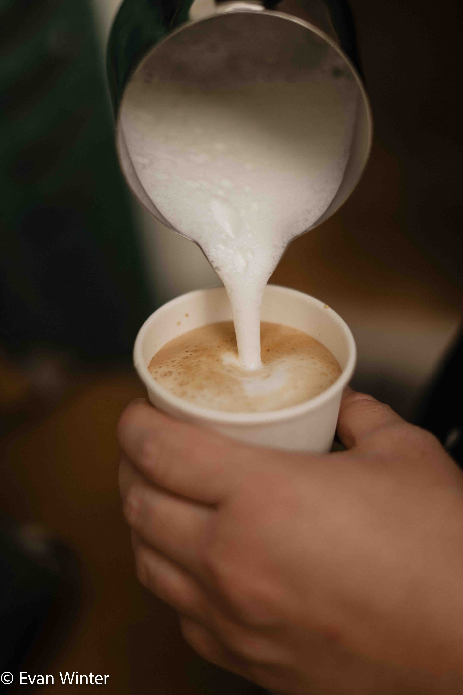

Start‑Up Gottesdienst
Beim Start-Up Gottesdienst in Tägerwilen mache ich Fotos und Videos und fange die Stimmung ein. Aus dem Material erstelle ich Clips, YouTube Videos und Bilder, die für Social Media und zur Dokumentation auf Instagram genutzt werden.